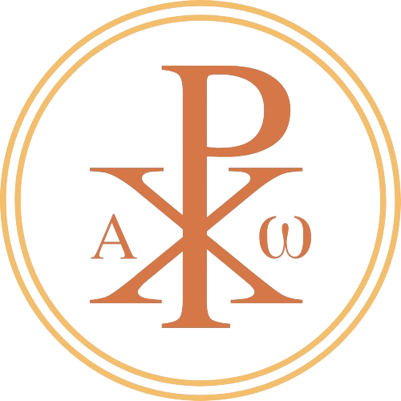

НАША СВРХА И ЦИЉЕВИ
Мисија Светосавске омладине Ниш у оснивању, уз благослов Његовог Преосвештенства, Епископа нишког г. Арсенија, јесте окупљање хришћанске младежи под окриље Српске православне Цркве, те њихово међусобно повезивање и узрастање у православној вери.
Светосавска омладина јесте заједница младих људи који теже међусобном усавршавању и подстицању једни других у познању православног хришћанског учења. Редовне активности, попут духовних разговора, трибина, пешачења, планинарења и путовања, за циљ имају, не само духовно сазревање чланова заједнице, већ и њихов складан интелектуални и физички развој као целовитих личности.
Амбијент сачињен од људи који желе да узрастају у разумевању начела православне вере, повезаних чврстим везама пријатељства и братске љубави, јесте једна здрава основа за усавршавање и развој, али и превазилажење предрасуда и проширивање видика сваке младе личности понаособ.
Такође, мисија има за циљ и неговање националне историјске свести, патриотске савести, црквено-историјске и државотворне традиције, инспирисаних завештањем њиховог утемељивача, Светим оцем Савом Немањићем.